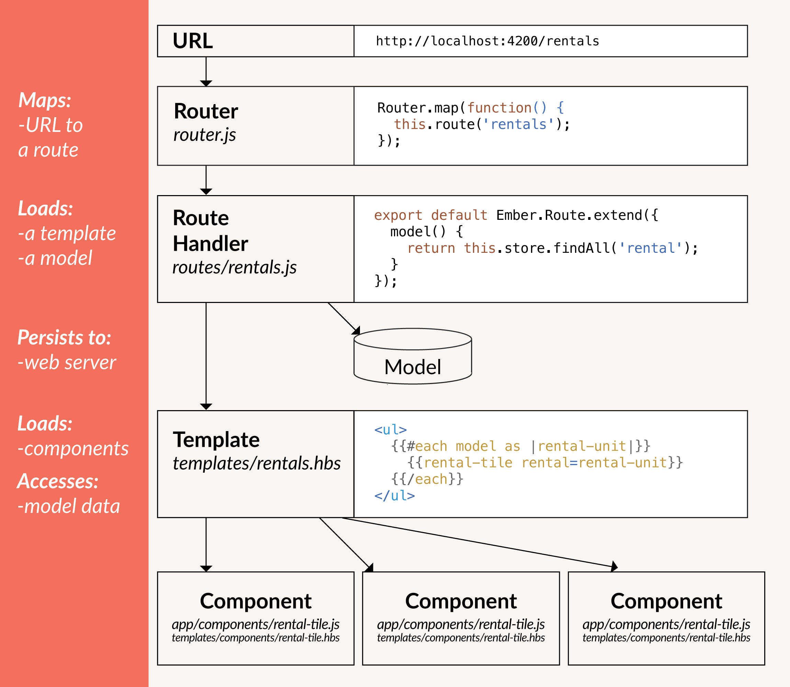

Emberのコアコンセプト 編集
Emberでコードを書き始める前に、Emberアプリケーションがどのように動くのか概要を知っておくと良いでしょう。

ルーターとルートハンドラ
不動産賃貸サイトのWebアプリを書いていくことを想像してみましょう。 ユーザがどの物件を見ているのか、または、その物件を編集しているのか、といった問いに対して、いつでも答えられなければなりません。 Emberでは、それらの問いにURLで特定して答えることができます。 URLが入力される方法はいくつか存在します。
- ユーザがアプリにアクセスする
- ユーザが手動で変える、ブラウザバックしたりアドレスバーで変更するなど
- アプリ内のリンクをクリックする
- アプリ内のその他のイベントによりURLが変更される
URLがどう変わっても、Emberではまず最初にルータがそのURLをルートハンドラにマップします。
そしてルートハンドラは主に2つのことをします。
- テンプレートの描画
- モデルのロード(テンプレート内ではロード後に使える)
テンプレート
Emberアプリケーション内のHTMLはテンプレートから編成されます。
Emberアプリケーションのテンプレートのほとんどは見た感じHTMLと同じように見えるでしょう。例えば、
EmberのテンプレートはHandlebars(ハンドルバーズ)の構文を使います。 Handlebarsの構文で正しいものはどれもEmberの構文でも正しいです。
テンプレートはプロパティを表示することができます。プロパティはテンプレートのコンテキストであるコンポーネントかルートのコントローラから与えられます。例えば、
この{{name}}はテンプレートのコンテキストから与えられるプロパティです。
プロパティに加え、二重波括弧{{}}は、ヘルパーやコンポーネントにも使われます。
コンポーネントについては後述します。
モデル
モデルは永続化された状態を表します。
例えば、賃貸物件アプリで、ユーザが物件を公開する時に物件の詳細情報(details)を保存したい場合、アプリ内にdetailsを定義したrentalモデルを持つことになるでしょう。
モデルでは情報の永続化にWebサーバが主に使われますが、設定次第でブラウザのローカルストレージなども可能です。
コンポーネント
テンプレートにはUIの見た目を記述し、コンポーネントにはUIの振る舞いを記述します。
コンポーネントは、Handlebars構文で書かれたテンプレートと、振る舞いを書いたJavaScriptの2つから成り立ちます。例えば、賃貸物件アプリで、全物件を表示するall-rentalsコンポーネントがあり、一つの物件を表示するrental-tileコンポーネントがあるとして、rental-tileコンポーネントに、ユーザが物件画像の表示や非表示ができるようにコードを書く、という感じです。
では、これらのコアコンセプトを次のレッスンで賃貸不動産アプリケーションを実際に作りながら見ていきましょう。